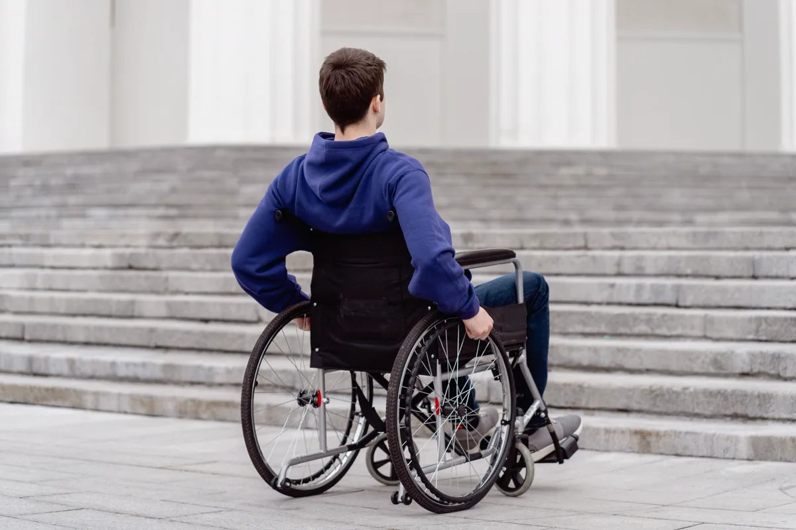
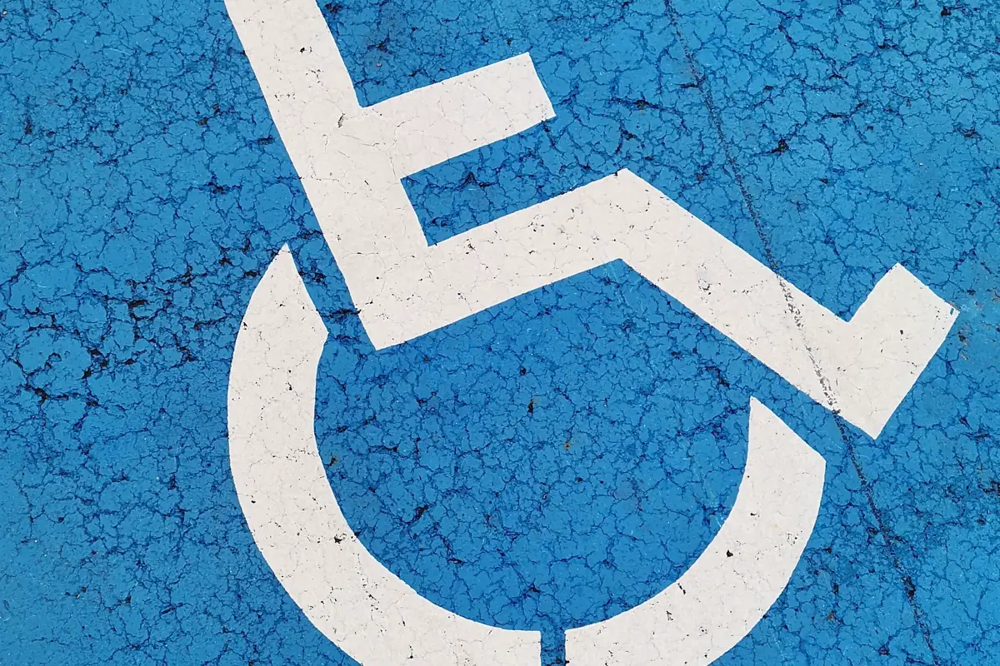

Por que a acessibilidade virou exigência de rotina
A Lei 13.146/2015, a Lei Brasileira de Inclusão, transformou acessibilidade em obrigação com consequência prática. A norma técnica que diz como atender é a ABNT NBR 9050, e é ela que a fiscalização usa como régua.
O pedido chega quase sempre por um destes caminhos: alvará de funcionamento novo, renovação de licença, notificação da prefeitura, exigência de edital ou contrato com órgão público, auditoria de rede, ou reclamação formal de um cliente ao Ministério Público. Nos quatro primeiros dá para se planejar. No último, o prazo já veio junto.
Esta página trata do escopo de acessibilidade. Para os demais documentos de engenharia — estrutural, instalações, vistoria cautelar — veja laudos técnicos e ART.
O que é verificado na vistoria
Rota acessível externa
Do ponto de embarque e desembarque e da vaga PcD até a entrada principal: largura livre, piso firme e regular, desníveis, grelhas e tampas, inclinação transversal da calçada, rebaixamento de meio-fio e obstáculos aéreos. Uma rampa perfeita não vale nada se o percurso até ela tiver um degrau.
Entrada, circulação e desníveis
Vão livre das portas, maçanetas, força de abertura, capacho, soleira, rampas e escadas com piso tátil, corrimão em duas alturas em ambos os lados, guarda-corpo e patamares. Verificamos inclinação com nível digital e registramos o valor medido, não a impressão visual.
Sanitário acessível
É o item que mais reprova. Conferimos área de manobra, área de transferência ao lado da bacia, altura da bacia e do lavatório, barras de apoio (posição, comprimento e fixação), sentido de abertura da porta, acionamento da descarga, espelho, acessórios e alarme de emergência. Sanitário "adaptado" com barra parafusada em drywall sem reforço é reprovação certa.
Vagas, elevador e mobiliário
Quantidade e dimensão das vagas PcD e idoso, faixa de circulação lateral, sinalização horizontal e vertical, botoeira e sinalização sonora de elevador, altura de balcão de atendimento, mesa acessível em restaurante e área para cadeira de rodas em auditório.
Sinalização tátil, visual e sonora
Piso tátil de alerta e direcional, contraste de cor, sinalização em braille e em relevo, placas de identificação de sanitário e rota de fuga acessível. Em edificação com sistema de alarme, o aviso precisa ser audível e visual — ponto que costuma ser esquecido mesmo em obra nova, e que se cruza com o projeto de segurança contra incêndio.

Como conduzimos o serviço
Levantamento das rotas
Mapeamos as rotas acessíveis que a edificação precisa oferecer, do acesso externo a cada ambiente de uso, com planta ou croqui.
Vistoria com medição
Percurso completo com trena, nível digital e registro fotográfico. Cada não conformidade recebe medida, foto e o item da norma que ela contraria.
Plano de adequação
Classificação por prioridade — barreira que impede o uso vem antes de item de sinalização — com solução técnica e estimativa de intervenção.
Laudo e ART
Laudo assinado, com conclusão sobre a conformidade e o que falta, mais a ART registrada no CREA-ES para apresentar ao órgão que exigiu.
Não conformidades mais encontradas na Grande Vitória
| Não conformidade | Por que reprova |
|---|---|
| Rampa correta com degrau na chegada | A rota acessível é contínua: um único degrau interrompe todo o percurso |
| Barra de apoio no sanitário fora de posição | Não permite a transferência para a bacia, que é a função da barra |
| Porta de sanitário abrindo para dentro | Impede o socorro se a pessoa cair atrás da porta e reduz a área de manobra |
| Vaga PcD sem faixa de circulação lateral | Sem a faixa, não há espaço para abrir a porta e transferir para a cadeira |
| Piso tátil instalado em direção contrária ao fluxo | Conduz a pessoa com deficiência visual para o lugar errado — pior que não ter |
| Balcão de atendimento único e alto | Obriga o atendimento em pé; exige trecho rebaixado com altura e avanço para os joelhos |
| Corrimão em uma altura só | Não atende criança, pessoa de baixa estatura e cadeirante |
| Alarme de incêndio só sonoro | Pessoa surda não é avisada da emergência |

O que muda por tipo de edificação
Loja, restaurante e edificação comercial
O foco é acesso pela entrada principal (não pelos fundos), circulação entre gôndolas e mesas, sanitário acessível de uso público e balcão de atendimento e de pagamento.
Escola, clínica e órgão público
Escopo mais amplo: rota até cada sala de uso, sinalização completa, mobiliário adaptado, atendimento prioritário e rota de fuga acessível com área de resgate quando há pavimento superior sem elevador de emergência.
Condomínio residencial e comercial
A obrigação recai sobre a área comum: portaria, hall, elevador, salão de festas, piscina, academia e áreas de lazer. Costuma andar junto do plano de manutenção predial e, quando há brinquedos, do laudo de playground.
Galpão e edificação industrial
Áreas administrativas, refeitório, vestiário e sanitários seguem a NBR 9050. Áreas de produção têm tratamento próprio, articulado com a NR-12 e com o programa de segurança do trabalho.
Perguntas frequentes sobre laudo de acessibilidade
Quem é obrigado a ter laudo de acessibilidade?
Toda edificação de uso público e de uso coletivo — lojas, escolas, clínicas, hotéis, restaurantes, agências, órgãos públicos, academias, condomínios com área comum e edificações comerciais em geral. A exigência vem da Lei 13.146/2015 (Lei Brasileira de Inclusão) e da NBR 9050, e costuma ser cobrada na emissão do alvará, na renovação de licença, em contrato com órgão público e em processo do Ministério Público.
Qual a inclinação máxima de uma rampa pela NBR 9050?
A norma trabalha com faixas: até 5% o piso é considerado plano e não exige tratamento de rampa; entre 5% e 8,33% é a faixa usual de projeto, com comprimento de segmento e patamar de descanso definidos em função da inclinação; acima disso só em adequação de edificação existente, com limites e comprimentos bem menores. O erro mais comum em campo é a rampa executada com inclinação correta no trecho central e degrau ou desnível brusco na chegada, o que anula a rota acessível inteira.
O laudo de acessibilidade precisa de ART?
Sim. É serviço técnico de engenharia ou arquitetura e precisa de responsável habilitado com ART ou RRT registrada. Sem esse vínculo, a prefeitura e o Ministério Público não aceitam o documento, e o laudo não serve como prova de boa-fé em ação civil pública.
Prédio antigo precisa se adequar à NBR 9050?
Sim, quando é de uso público ou coletivo. A norma prevê soluções específicas para edificação existente, justamente porque nem sempre é possível atingir o parâmetro ideal de projeto novo. O caminho é o laudo apontar a solução tecnicamente viável para cada barreira e o plano de adequação estabelecer prazo e prioridade. O que não se aceita é a ausência de qualquer providência.
Quanto tempo leva a vistoria de acessibilidade?
Uma loja ou clínica de porte médio costuma ser vistoriada em meio dia. Escola, shopping, hospital e condomínio com várias torres levam de um a três dias de campo, porque cada rota acessível precisa ser percorrida e medida do estacionamento até o último ambiente de uso. O laudo sai em geral entre cinco e dez dias úteis depois da vistoria.
Laudo de acessibilidade na Grande Vitória
Vistoria NBR 9050 em lojas, clínicas, escolas, condomínios e órgãos públicos:
Recebeu notificação de acessibilidade?
Informe o tipo de edificação e a área. Retornamos com escopo da vistoria, prazo e valor.